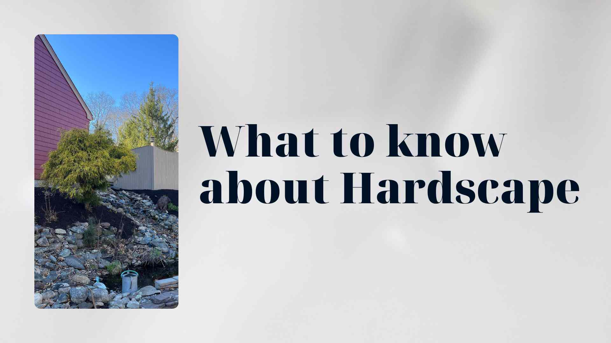

What to Know About Hardscape

Hardscape refers to the non-living, structural elements of a landscape — the patios, walkways, walls, and built features that give shape and permanence to your outdoor environment. While softscape elements like plants, grass, and trees bring life and color to a yard, hardscape provides the framework that organizes those living elements into a cohesive, functional design. Understanding the fundamentals of hardscape is essential for any homeowner considering an outdoor improvement project.
The Essence of Hardscape
At its core, hardscaping is the art of working with permanent materials to define and enhance outdoor spaces. Stone, brick, concrete, timber, and metal are the primary building blocks, and each material carries its own visual character, structural properties, and maintenance requirements. Natural stone delivers unmatched beauty with its unique color variations and organic texture, while manufactured pavers offer precision, consistency, and a broader range of design options at a more accessible price point.
The best hardscape designs strike a careful balance between built elements and the surrounding landscape. A patio should feel like a natural extension of the home, not a slab of concrete dropped into the middle of the yard. Walkways should follow intuitive paths that connect spaces logically. Walls should complement the existing terrain rather than fighting against it. When hardscape is executed thoughtfully, it appears as though it has always been part of the property, enhancing the natural setting rather than overpowering it.
Functional Outdoor Living
The primary purpose of hardscape is to create usable outdoor spaces that serve specific functions. A well-constructed patio becomes an outdoor dining room where families gather for meals under the open sky. A fire pit area with built-in seating becomes a living room without walls, perfect for conversations and relaxation on cool evenings. An outdoor kitchen with countertops, a grill station, and storage turns your backyard into a fully equipped entertaining venue.
Think about how you actually want to use your outdoor space before deciding on specific hardscape elements. If you love hosting large gatherings, prioritize a spacious patio with multiple seating zones and ample room for circulation. If quiet mornings with coffee are more your style, a small, secluded terrace tucked into a garden corner might be the ideal investment. The most successful hardscape projects are those that are designed around the way people actually live, not around trends or features that look impressive but rarely get used.
Accessibility and Safety
Hardscape plays a critical role in making outdoor spaces safe and accessible for everyone who uses them. Properly graded walkways with stable, non-slip surfaces ensure safe passage between different areas of the property in all weather conditions. Well-lit pathways and steps prevent trips and falls after dark. Gently sloped ramps alongside stairs make outdoor spaces welcoming for visitors with mobility challenges, strollers, and wheelchairs.
Drainage is another essential safety consideration in hardscape design. Every paved surface must be graded to direct water away from the home's foundation and toward appropriate drainage points. Standing water on a patio or walkway is not just an inconvenience — it creates slip hazards in warm weather and dangerous ice patches in winter. A well-engineered hardscape incorporates subtle slopes, channel drains, and permeable materials where appropriate to manage water effectively and keep your outdoor spaces safe year-round.
Retaining Walls
For properties with any significant change in elevation, retaining walls are among the most important hardscape investments you can make. These structures hold soil in place, prevent erosion, and transform steep, unusable slopes into level areas that expand your functional outdoor space. A series of terraced retaining walls can turn a hillside that was once nothing more than a mowing headache into a stunning multi-level garden with distinct planting zones and gathering areas.
The engineering behind a retaining wall is just as important as its appearance. Walls that retain more than a few feet of soil must account for hydrostatic pressure, soil type, freeze-thaw cycles, and drainage behind the wall. A properly constructed retaining wall includes a compacted gravel base, perforated drainage pipe at the footing, filter fabric to prevent soil migration, and backfill that allows water to flow freely to the drain rather than building up pressure against the wall face. Cutting corners on any of these elements risks structural failure that can be costly and dangerous to repair.
Captivating Features
Beyond patios and walls, hardscape encompasses a wide range of decorative and functional features that add personality and interest to your landscape. Water features such as fountains, cascading waterfalls, and reflecting pools introduce movement and sound that transform a quiet garden into a sensory experience. Fire features including fire pits, fireplaces, and fire tables create warmth and ambiance that make outdoor spaces feel inviting long after the sun goes down.
Arbors, pergolas, and pavilions add vertical dimension and architectural interest while providing shade and defining outdoor rooms. A stone or brick column flanking a driveway entrance sets a tone of permanence and quality before visitors even reach the front door. Decorative boulders and stone outcroppings, when placed skillfully, create natural-looking focal points that anchor plantings and add visual weight to the landscape. Each of these features contributes to the overall story your outdoor space tells, and the best designs weave them together into a narrative that feels both intentional and effortless.
Designing with Cohesion
One of the most common pitfalls in hardscape projects is a lack of visual cohesion. When different materials, colors, and styles are mixed without a unifying vision, the result feels disjointed and chaotic rather than designed. The key to cohesive hardscape design is establishing a material palette and style direction early in the planning process and carrying those choices consistently throughout the entire project.
Take cues from your home's architecture when selecting hardscape materials. A colonial-style home pairs naturally with brick or bluestone in traditional patterns. A contemporary residence calls for clean lines, large-format pavers, and minimal ornamentation. A rustic farmhouse feels right with natural fieldstone and reclaimed timber. Limit your material palette to two or three complementary choices and repeat them throughout the landscape to create visual continuity. A stone used in the patio can reappear as a wall cap, a step tread, or a column accent, tying the entire outdoor environment together into a unified composition.
Professional Design
While small hardscape projects like a simple stepping stone path can be tackled as weekend projects, most significant hardscape work benefits enormously from professional design and installation. A landscape architect or experienced hardscape contractor brings knowledge of structural engineering, material properties, drainage requirements, and building codes that are essential for projects involving retaining walls, large patios, outdoor kitchens, and grade changes.
Professional designers also bring a trained eye for proportion, scale, and spatial relationships that can be difficult for homeowners to envision from a plan on paper. They understand how a space will feel once it is built, how traffic will flow through it, and how the hardscape will interact with existing plantings and structures over time. The investment in professional design typically pays for itself many times over in avoided mistakes, structural integrity, and a finished product that adds lasting value to your property. A poorly planned hardscape project can cost more to fix than it would have cost to do correctly from the beginning.